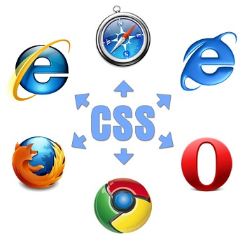
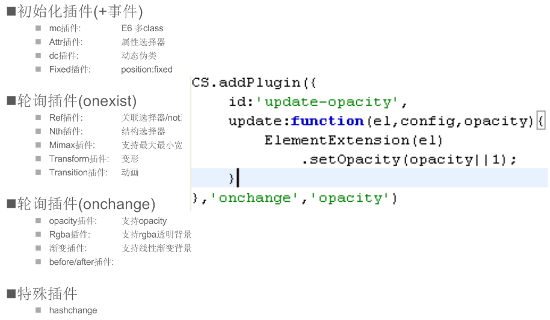

浏览器增强和差异化
百度知识搜索部 梁东杰
liangdongjie@baidu.com
Press → key to GO
修改时间：2012.7.19（web ppt 2012.7.25）
浏览器增强和差异化
- “增强”和“差异化”研究的什么？
-
增强：让浏览器支持新的功能
差异化：不同代码相同效果 或 同样代码不同效果 - 方案目标
-
增强各路浏览器
实现，标准化的CSS3开发和应用！
（这里CSS3泛指，也包括部分CSS2特性）

目录

CSS3真的好！
一、CSS3
>>变形、动画很酷
-
- 变形
- transform
-
- 过渡动画
- transition
-
- 关键帧动画
- animation
一、CSS3
>>图形修饰功能够震撼
- 透明
- 背景渐变
- 盒子效果：圆角、阴影
- 文字效果：截断、阴影
一、CSS3
>>细节交互脚本的终结者
-
- 状态伪类
- :hover/:focus /:active
-
- 容器控制
- min/max-width
-
- 定位
- position:fixed
一、CSS3
>>模板hack都可以靠边站
-
- 结构匹配
-
:nth-child(nth/odd/even), :nth-of-type(nth)等,
:first-child, :last-child, :empty等 -
- Row 1
- Row 2
- Row 3
- Row 4
- Row 1
- Row 2
- Row 3
- Row 4
一、CSS3
>>终端适配更简单
-
- 终端条件处理
- mediaQuery
-
页面宽度是？
一、CSS3
>>轻松应付普通开发
- 传统关键词
- 切图、改HTML、写JS、私有语法、用Hack、需求改到头大
| 需求 | 传统实现 | CSS3 |
|---|---|---|
| 背景渐变的 | 把背景切下来吧 | linear-gradient |
| 要有阴影 | 把边缘也切下来 | box-shadow |
| 自适应的圆角 | 得补上HTML结构 | border-radius |
| 边缘是半透明 | 给补个透明滤镜吧 | box-shadow |
| 做成三态 | 得写JS帮忙了 | :hover / :active |
| 调整下立体感 | 重新切吧 T_T | 改css参数 :P |
呦！切 It Now

可是。。。浏览器环境很糟呀！
二、浏览器限制
>>浏览器分布
某产品5月份情况

二、浏览器限制
>>CSS3支持情况
- IE6不用说了
-
- IE7比IE6 稍好
- 支持部分选择器，如[att$="val"],[att*="val"]
-
- IE9是伪现代
- 有部分不支持：动画(transition、animation)、渐变背景、文本阴影、muti-columns
-
- 高级浏览器良好，带前缀
- -webkit/-moz/-o/-ms
参考：http://www.findmebyip.com/litmus/
二、浏览器限制
>>低端浏览器
-
- 优雅降级？
-
- 图形修饰、动画类可忽略
- 选择器类，会影响可用性
-
- 差异化不可避免
- 可用性不可忽略
- 解决差异问题依然值得重视

不怕，有TA在！
三、增强开发工具
>>产出
- 浏览器增强开发工具：ColorStone
- 五色石(ColorStone)，出自“女娲补天”神话，相传是女娲用来补天的材料。项目取名CS，意为弥补浏览器不足
目标浏览器：IE6/7/8/9; FF/Chrome,Safari/Opera
三、增强开发工具
>>浏览器增强思路
-
- 解铃还须系铃人
-
- 用CSS解决CSS的问题
- DOM操作友好
- 纯CSS3，不加料
- 保证可用性，稍有差异
三、增强开发工具
>>使用方式
-
- 安装/启动
-
npm cs node –e “require(‘cs’)”
-
- 开发
- 修改代码/实时查看效果
-
- 发布
- 打包发布
三、增强开发工具
>>保证开发体验
- 只关注最新标准
- 无附加的语法
- 自动编译，无需操作/等待
- 友好语法提醒
四、功能介绍
>>IE系列的功能增强
-
- 选择器类
- 对比：ie7.js(Dean Edwards)
-
- 图形修饰类
- 对比：CSS3PIE
- 动画/变形/布局类
四、功能介绍
>>高端浏览器的差异抹平
-
- 私有前缀补全（-prefix-）
- transform: rotate(5deg);
- -webkit-transform: rotate(5deg);
-moz-transform: rotate(5deg);
-o-transform: rotate(5deg);
-ms-transform: rotate(5deg);
四、功能介绍
>>标准化hack语法
- 部分差异不方便抹平
-
- 将Hack语义化！易理解
-
-ie6-width: ==> _width:
-ie6/-ie7/-ie8/-ie9/-ms/-moz/-webkit/-o
- 编译生成，自动修正顺序
四、功能介绍
>>语义提醒
- 语法正确性
- 兼容支持
五、技术实现
>>模块介绍
-
- 基于Node的编译、调试工具
-
- 编译生成兼容代码
- 本地服务器辅助开发调试
-
- 运行时JS框架
- 用于IE类的支持
五、技术实现
>>系统运行流程

五、技术实现
>>IE兼容思路
采用专有属性及JS扩展等技术手段，让老版本的浏览器(如：IE6)支持更新的CSS标准
-
- 流程使用到技术：
-
- 增强特性语法识别和配置：编译
- 元素效果初始化：expression/htc
- 图形效果及动画：滤镜
- JS监听/条件轮询
五、技术实现
>>编译模块插件化

五、技术实现
>>运行时框架工作原理

五、技术实现
>>运行时框架插件化

五、技术实现
>>DOM操作友好
- 样式变化：style/class/:hover...
- 属性变化：onpropertychange
- 结构变化：添/删/移动
五、技术实现
>>性能保障
-
- expression/htc
- 只运行一次，初始化后即被覆盖
-
- 轮训优化
- 插件入口控制
五、技术实现
>>性能数据
-
- expression/htc
-
- :hover: 20次/ms
- 测试程序：a-hover-expression.htm
-
- 轮询优化
-
-
- currentStyle属性访问:
- 读currentStyle cs-width属性10K次耗时 16ms
- 写后读runtimeStyle width属性10K次耗时78 ms
- currentStyle属性访问:
- 测试程序：test-style-get-set.htm
-
五、技术实现
>>回顾我们的优势
- 原生CSS3语法
- 支持较全面
- DOM修改友好
- 更可靠的性能（编译期优化）
Q & A
谢谢！
[help]
- ← and → to move around.
- Ctrl/Command and + or - to zoom in and out if slides don’t fit.
Status: